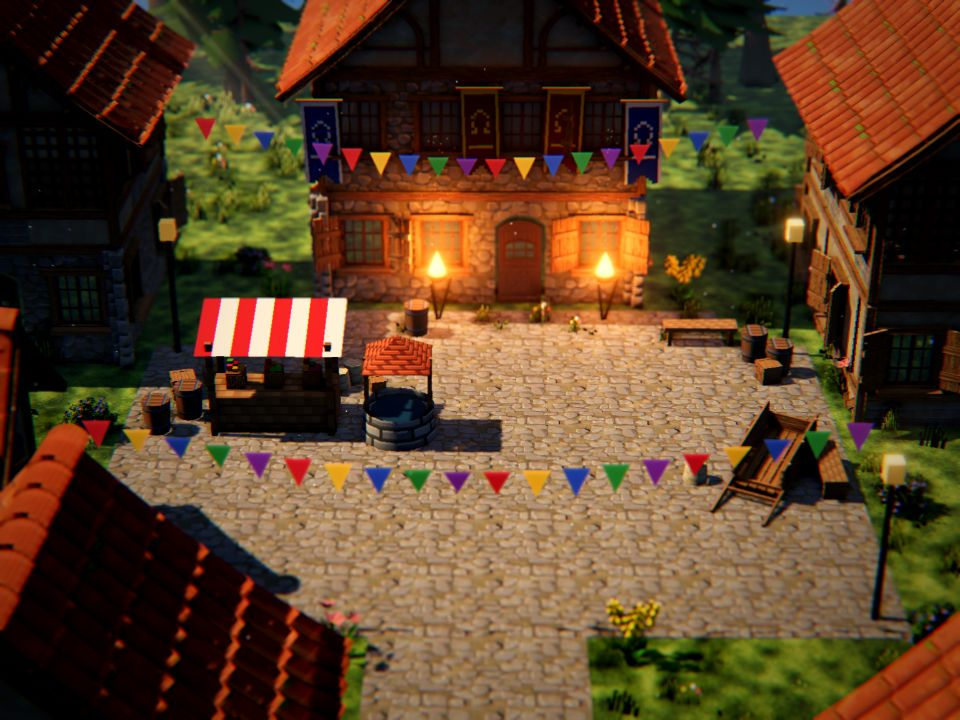
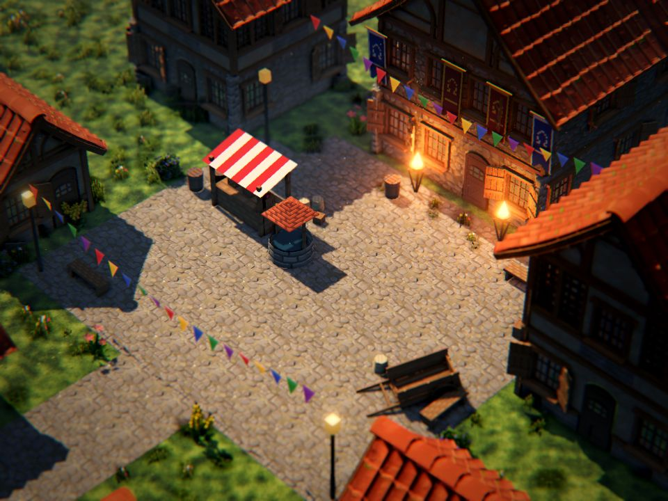
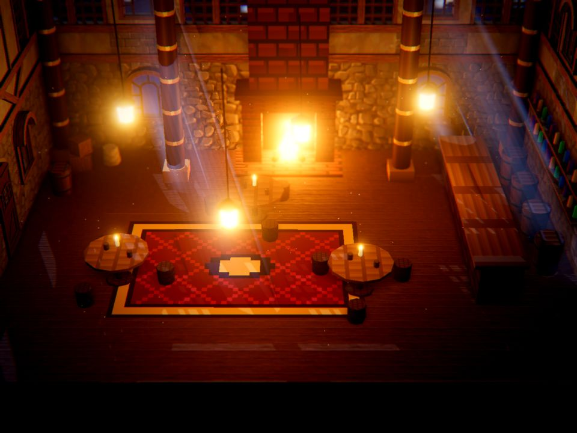
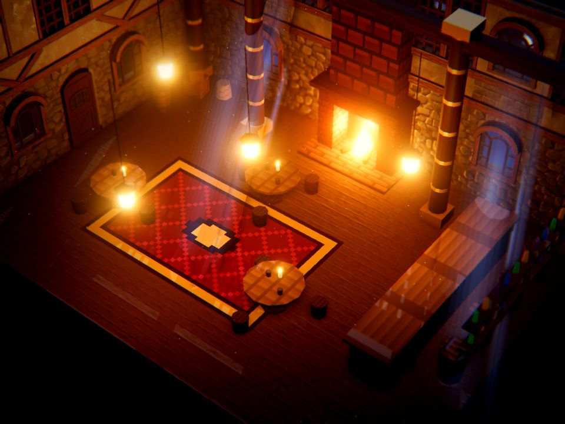

Look slice (LK1): the review
The hero scene at the target look, built from the owner's references (P158), the CC0 kits we author on top of (P159) and the owner's three notes on milestone 1 (P160). Status, 2026-11-13: built and live; waiting on the phone run and the owner's verdict (P161).
Open the slice on the phone: uma-platform.web.app/look
The frames
Rendered by the look stage at render scale 1.5. The Umas are hidden in these pictures because their art is private (never in git); the live page and the private captures show them standing in the scenes.




The layers
The packet's eight layers, each switchable on the review page (pnpm --filter @luismlorenzana/uma-stage look),
and what the owner's notes added.
| Layer | What is in | |
|---|---|---|
| 1. Camera | Perspective, narrow field of view; Octopath's front view (27° down) and Triangle Strategy's diagonal 3/4 (40° down, 45° turned); a slight sway | in |
| 2. Volume | 3D kit buildings (lower roofs, 0.72 of the kit's pitch); 2.5D tufts, clover and flowers; our sprites as upright standees, stretched by the camera's pitch | in |
| 3. Character light | A little of each sprite's own colour as a key; a warm rim from the key's side, read off normal maps made from each sprite's outline | in |
| 4. Shadows | Sun or moon shadows that follow sprite silhouettes; a contact shadow at the feet; ambient occlusion on High | in |
| 5. Focus | Depth of field by depth, the focus on the party's distance per camera family | in |
| 6. Grade | Bloom, ACES tone mapping, a per-scene grade (saturation, contrast, warm light over cool shadow), a vignette, a touch of chromatic aberration | in |
| 7. Atmosphere | Height fog; light shafts (between the trees by day, through the windows at night); petals, embers, dust; wind on leaves, flowers and grass; flicker on every flame | in |
| 8. Resolution | The 3D frame at the tier's render scale (1.5, 1, 0.75 of the device's pixels), the interface at full density (a parchment dialogue box) | in |
| Pixel scale | Every kit texture redrawn at 64 texels with stepped colours, sampled nearest (milestone 1's "coarser") | in |
| Grass | One 1024-texel olive texture repeating every 48 m, world-space lush and dry patches, lit tufts (P160) | in |
| Sprites | Our sets as drawn, by default; a pixel pass at 48 texels on a switch (P160: it mangles faces) | in |
The look measures against the references
The look measures (LR12) on each frame at 640 px wide, against the twelve references' range. Green is within.
| Measure | References | Square, front | Square, 3/4 | Tavern, front | Tavern, 3/4 |
|---|---|---|---|---|---|
| Contrast (lightness p5–p95) | 58 – 99 | 66 | 67 | 68 | 69 |
| Palette (colours for 90%) | 82 – 431 | 241 | 215 | 132 | 126 |
| Chroma, mean | 10 – 37 | 25 | 22 | 30 | 33 |
| Blurred share | 0.08 – 0.82 | 0.60 | 0.61 | 0.78 | 0.73 |
| Lightness, mean | 23 – 58 | 29 | 31 | 21 | 22 |
| Focus band (middle over outer) | 0.8 – 3.4 | 3.7 | 5.7 | 2.9 | 2.0 |
| Vignette (edge over middle) | 0.37 – 1.22 | 0.39 | 0.39 | 0.14 | 0.17 |
| Warm light over cool shadow | −4 – 24 | 32 | 28 | 47 | 47 |
| Within | 6 of 8 | 6 of 8 | 5 of 8 | 5 of 8 |
What is off, and why: warm over cool runs above every reference (orange roofs by day, firelight at night); the square's focus band is a stronger miniature than the references (the 3/4 view most); the tavern is a little darker than the references' night frames, with a dark room around it. Each is one setting on the review page, held until the owner's verdict says which way.
The phone test
Your step
- On the iPhone, open uma-platform.web.app/look (signed in as for the Ranker).
- Turn the phone sideways; look around both scenes and the camera buttons.
- Tap Run the phone test and leave the phone still for about 16 minutes (the screen stays on).
- Answer how warm the phone is: Cool, Warm or Hot. The numbers save themselves.
What it runs, and the budgets (LR6)
| Step | Time | Budget |
|---|---|---|
| High | 10 min | 30 fps held 95% of seconds; about 400 MB of GPU memory; the first minute against the last (heat) |
| Medium | 3 min | The same, on a warm phone: no ambient occlusion, render scale 1, a 1024 shadow map |
| Saver | 3 min | The same: render scale 0.75, no depth of field or bloom, no particles |
| First load | — | About 15 MB: the kit (3.2 MB, kept on the device after) and eight sprite sets |
On this Mac every tier holds 120 fps; the phone is the test. If High misses, the tiers say where the budget goes; if every tier misses, LK4 weighs the same slice in Godot or Unity.
The pipeline the slice runs on
Orange outline: private, never in git. The review app reads the same pack from disk.
Next
| Packet | What | When |
|---|---|---|
| LK1 | Done when the owner says "this is the bar" (or lists what's missing, worked here) and the phone run is in | your verdict and one run |
| LK2 | The pipeline from the slice: kit format v2 (2D, 2.5D, 3D pieces), the importer (the pack, generalised), batching at build time, sprite normal maps, the look measures in CI, a look-tuning page | after LK1 |
| LK3 | Each game's roll-out on the look path: uma-quest's towns first | after LK2 |
| LK4 | Only if the phone can't hold the budgets: the same slice in Godot 4 or Unity | only if needed |
Calls
| P158 | The owner's 12 references are the look bible v0 and the measures' target ranges; the hero scene is a town square by day with a tavern at night |
| P159 | No paid packs, ever: Claude authors the kits, with free CC0 kits as reference and raw material |
| P160 | The owner's three notes: sprites stretched upright and animated, Octopath's front and Triangle Strategy's 3/4 as camera families, natural grass |
| P161 | LK1 in full: the look path as a package export, the tavern at night, every layer, the pack and batching, the phone test on the platform site |
Sources: hd2d-quality.md (LR1–LR14), bible.md, the LK1 packet, decisions.md.